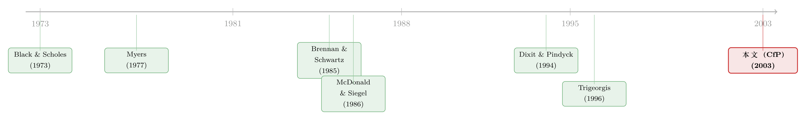

一纸征稿启事，半部「等待」的经济学——从 2003 年的一页空白处，读实物期权
本文读的不是一篇论文，而是 2003 年印在 Journal of Financial Economics 卷末的一页 《Call for Papers: Review of Financial Economics — Special issue on Real Options》。它没有数据、没有回归、没有定理，只有两位客座主编的名字、一个截稿日（2003 年 11 月 30 日），和一串招稿主题。但「Real Options（实物期权）」这五个字背后，藏着公司金融里最叛逆的一个念头：净现值（net present value, NPV）那条「大于零就投」的金科玉律，其实是错的——因为它算漏了「再等一等」这件事的价值。
1 引言：一页没有结论的纸
先说清楚一件有点尴尬的事：摆在我面前的，根本不是一篇论文。
它是一张征稿启事（call for papers）。整整一页，正文不到三百个英文单词，结构简单到可以一眼看穿——一句「我们要办一期专刊」，一份招稿主题清单，一段投稿须知（请寄四份、订阅者收 25 美元、非订阅者 50 美元含一年订阅、支票抬头写新奥尔良大学），最后是地址、邮箱和网址。它甚至不属于 JFE 自己：这是 Review of Financial Economics 的征稿，只是被当作补白，印在了 2003 年某一期 JFE 的卷末空白处。
这种「卷末文献」我们在这个博客里读过不少。有读编委名单读出一门学科版图的（参见《八个名字撑起的一页》），有读一封涨价通知读出微观经济学的（参见《一封涨价通知里的微观经济学》），也有读另一张过期征稿启事读出「公司治理还在给自己划地盘」的（参见《一张过期二十多年的征稿启事》）。这一张，主题词只有两个字——实物期权。
于是一个自然的问题是：一张连一句结论都没有的纸，凭什么值得专门写一篇评述？
答案不在纸面上，而在那个被招稿主题反复环绕、却从未被这页纸点破的核心想法里。这篇文章，就想把那个核心想法一步一步讲透。
2 张力：NPV 为什么「算错了」
要理解实物期权，得先回到每一本公司金融教科书的第一课：净现值法则。
法则很朴素。一个项目，把它未来现金流的现值加总，记作 \(V\)；要投进去的成本记作 \(I\)。如果 \(V \ge I\)，即 \(\text{NPV}=V-I\ge 0\)，就该投；反之就别投。直觉上无懈可击——一笔买卖只要划算，凭什么不做？
可现实里，经理人偏偏不这么干。他们设定的「门槛收益率（hurdle rate）」常常高得离谱，远高于资金成本；明明算出来 NPV 为正的项目，他们却按着不投，宁可再观望一阵。教科书把这叫「非理性」「过度保守」，是该被纠正的认知偏差。
但真的是偏差吗？
接着，把两件现实世界里再普通不过的特征加回模型：
- 不可逆性（irreversibility）。盖到一半的工厂、钻下去的油井、投进去的研发，多半收不回来——投资是沉没的。
- 不确定性（uncertainty）。项目的价值 \(V\) 不是个定数，它随市场、油价、技术、需求一路波动。
- 时机的弹性（flexibility of timing）。你今天不投，机会通常不会立刻消失，明天、后天还在。
这三件事凑在一起，会发生什么？真正关键的一步在于：「现在就投」并不是和「永远不投」二选一，而是和「等到明年看清楚了再投」在竞争。 一旦你今天把钱砸下去，就杀死了「再等一等」这个选项。而在一个会波动的世界里，「等」是有价值的——坏消息来了你可以不投，好消息来了你再加码。
于是反转出现：投资机会本身，就是一份看涨期权（call option）。 标的是项目价值 \(V\)，执行价是投资成本 \(I\)，行权就是「拍板开工」。而期权理论早就告诉我们一件事——一份还没到期的美式看涨期权，几乎永远不该提前行权，哪怕它已经处在价内（in the money）。把这句话翻译回公司金融，就是：哪怕 NPV 已经为正，最优策略也常常是「再等等」。
NPV 法则的错，不在于它算错了 \(V-I\)，而在于它默认你必须现在就做决定，从而把那份「等待的期权」白白扔掉、记成了零。（关于 NPV 法则自身的内在矛盾，还可参见《为什么「按 NPV 选项目」反而选不出最高的 NPV？》。）
3 模型：给「等待」标一个价
光说「等待有价值」还不够，石头落地得有个数。这一节我们把实物期权最经典的那个模型——「投资时机（option to wait）」模型——一步步搭出来。它的设定足够简单，却把整个领域的灵魂都装了进去。
设定。 项目的价值 \(V\) 服从几何布朗运动（geometric Brownian motion）：
$$ dV = (r-\delta)\,V\,dt + \sigma\,V\,dW $$
这里 \(r\) 是无风险利率，\(\sigma\) 是波动率，\(dW\) 是标准布朗运动的增量，\(\delta>0\) 可以理解为持有项目却尚未行权时「漏掉」的现金流收益率（持有成本，类似股票的股息率）。我们要找的是投资机会的价值 \(F(V)\)，以及一个最优的行权门槛 \(V^*\)：当 \(V\) 第一次涨到 \(V^*\)，就立刻投下成本 \(I\)，拿到价值 \(V\)。
第一步：写出 \(F(V)\) 满足的方程。 在还没行权的「等待区」（\(V $$
\tfrac{1}{2}\sigma^2 V^2 F''(V) + (r-\delta)\,V\,F'(V) - r\,F(V) = 0
$$ 这一步成立的直觉是：在等待区里，期权的价值变化完全由 \(V\) 的随机游走驱动，没有别的来源；风险中性世界里它的期望增值率必须正好是 \(r\)，否则就有套利。 第二步：求通解。 这个方程的解是幂函数形式 \(F(V)=A\,V^{\beta}\)。代回去，指数 \(\beta\) 必须满足所谓的「基本二次方程（fundamental quadratic）」： $$
\tfrac{1}{2}\sigma^2\,\beta(\beta-1) + (r-\delta)\,\beta - r = 0
$$ 它有一正一负两个根。因为「\(V\) 趋近于 0 时机会一文不值」要求 \(F(0)=0\)，负根被剔除，只留下那个大于 1 的正根： $$
\beta = \tfrac{1}{2} - \frac{r-\delta}{\sigma^2} + \sqrt{\left(\frac{r-\delta}{\sigma^2}-\tfrac{1}{2}\right)^2 + \frac{2r}{\sigma^2}} \;>\; 1
$$ 第三步：用两个边界条件钉死门槛。 现在还剩两个未知量：系数 \(A\) 和门槛 \(V^*\)。它们由行权那一刻的两个条件决定—— $$
\underbrace{F(V^*) = V^* - I}_{\text{value matching}},
\qquad
\underbrace{F'(V^*) = 1}_{\text{smooth pasting}}
$$ 前者叫价值匹配（value matching）：在门槛上，期权的价值正好等于行权得到的净收益 \(V^*-I\)，价值不能凭空跳变。后者叫平滑粘合（smooth pasting）：在门槛上两条曲线还得相切，斜率相等——这正是「\(V^*\) 是最优选择」的一阶条件。少了平滑粘合，你选的门槛就不是最优的。 第四步：解出门槛。 把 \(F(V)=A V^\beta\) 代入这两个条件，两式相除消掉 \(A\)，得到全篇的主角： 这就是反转的全部。 NPV 法则说：\(V\ge I\) 就投。实物期权说：要等到 \(V \ge \dfrac{\beta}{\beta-1}\,I\) 才投。而 \(\dfrac{\beta}{\beta-1}\) 这个乘数严格大于 1——比如当它等于 2 时，意味着你该等到项目价值涨到投资成本的两倍才动手。那些被教科书骂作「过度保守」的高门槛，原来不是非理性，而恰恰是把「等待的期权」算进去之后的最优解。（这条「门槛被人为抬高」的逻辑，在别的机制下也会出现，参见《把「门槛」抬高，是为了在谈判桌上赢回来》。） 更妙的是比较静态：\(\sigma\) 越大，\(\beta\) 越接近 1，乘数 \(\dfrac{\beta}{\beta-1}\) 越大，门槛越高。 不确定性越强，越该按兵不动。这与直觉完全相反却又一拍即合——正是因为前路不明，「再看看」这份期权才更值钱。 现在回到那张纸。理解了上面这个核心，再去读它的招稿主题清单，每一行都不再是空话： 换句话说，这页纸不是凭空冒出来的。到 2003 年，实物期权已经从「给油井估值」的一个小技巧，长成了一套横跨估值、战略、产业组织的方法论。客座主编之一 Lenos Trigeorgis，正是这个领域最重要的整合者之一——他 1996 年那本 Real Options 几乎是这门学问的标准教材。一本期刊在这个时点要办专刊，与其说是「号召」，不如说是「确认」：一门手艺成熟了，到了该集中收割的季节。 招稿清单里那行「Theoretical issues and empirical studies, case applications and organizational adoption issues」，其实泄露了 2003 年这门学问的真正软肋——理论早已精致，实证与落地却步履蹒跚。怎么从数据里把「期权价值」识别出来、企业到底有没有真的按期权逻辑决策，至今仍是难题。下文的研究方向会回到这一点。 这条线的起点，是一记惊雷。 首先，1973 年，Black 与 Scholes 给出了期权定价公式，同年 Merton 把它推广并奠定了理性期权定价的框架——金融第一次有了给「或有权利」标价的严密语言。 接着，一个自然的问题是：公司的资产里，难道没有「或有权利」吗？1977 年，Myers 在研究公司举债时第一个把这层窗户纸捅破，提出公司的价值里有一部分是「成长机会」，而成长机会本质上是期权——「real options」这个词，正是出自他的笔下。 然后，理论开始落地。1985 年，Brennan 与 Schwartz 把期权方法用到自然资源投资（矿山的开、关、停），第一次让实物期权算出了真实的数字。1986 年，McDonald 与 Siegel 写下了「等待的价值（the value of waiting to invest）」——也就是上一节那个模型的雏形，把「不可逆 + 不确定 ⇒ 该等」彻底讲清楚。 但真正让这门学问破圈的，是两本书：1994 年 Dixit 与 Pindyck 的 Investment under Uncertainty 把连续时间方法系统化，1996 年 Trigeorgis 的 Real Options 把它接上了公司战略。到这一步，实物期权从一个定价技巧，变成了一种看待「不确定下投资」的世界观。  2003 年的这张征稿启事，就站在这条线的下游：理论已经成型，客座主编正是集大成者之一，剩下的任务是把它推向更广的实证与应用。这也正是后来 JFE 上一批实物期权论文的来路——无论是把代理与信息装进「等待」里的《谁的手指扣在扳机上？》，还是把竞争写进均衡的《竞争越激烈，反而越要「等」？》，乃至把研发的「赌运气」性质算进折现率的《R&D 的技术风险为什么折现率反而更高？》，都是这条脉络在二十年里结出的果。 Q：实物期权和「金融期权」到底是不是一回事？ 数学上是同源的，经济上不是。金融期权有公开市场、有可交易的标的、能用复制组合做无套利定价；实物期权的「标的」（一个油田、一项研发）往往不可交易、市场不完备，\(\sigma\) 怎么估、能不能复制都成问题。所以实物期权常常只能给出定性方向（不确定性↑ ⇒ 门槛↑），精确数字要打个问号。 Q：那「等待有价值」会不会被滥用成「永远别投」的借口？ 模型恰恰相反——它给出的是唯一的最优门槛 \(V^*=\frac{\beta}{\beta-1}I\)，到点就该果断行权。等待有价值，但过了门槛还在等，就是在烧掉期权的内在价值。真正的洞见不是「别投」，而是「把投资时机本身当成决策变量」。 Q：为什么不确定性越大，反而越该按兵不动？这不反常识吗？ 关键在不可逆 + 不对称。波动率放大的是「上行你受益、下行你可以不投」这份不对称收益；\(\sigma\) 越大，这份保险越值钱，于是你越舍不得过早行权把它锁死。如果投资可逆（投错了能撤），这个效应就消失了——不可逆性是实物期权的灵魂。 Q：那些「高得离谱」的企业门槛收益率，真能全部归功于实物期权吗？ 不能。实物期权是一个解释，但同样的现象也能由代理问题、谈判势力、融资约束、乐观/悲观情绪等机制产生。把高门槛一律归因于期权，是过度归因。诚实的说法是：期权提供了一个「理性的下限」，让我们不必一看到高门槛就喊「非理性」。 Q：为什么这是给 Review of Financial Economics 的征稿，却印在 JFE 里？ 这就是「卷末文献」的常态——同属一个出版生态（当年都在 Elsevier/Econbase 体系下）的期刊，会用彼此的卷末空白互相补白、互打广告。它本身不构成学术内容，但像一枚时间戳，标记了某门学问在某一年的状态。 Q：实物期权在 2003 年之后，是「赢了」还是「淡出了」？ 两者都有。它的思想赢了——「不可逆 + 不确定 ⇒ 等待有期权价值」已内化进主流投资理论，今天没人会否认。但作为一套实操估值工具，它在企业里的采纳率一直不高，正应了那张征稿清单里点名的「organizational adoption issues」。理论的胜利，掩盖不了落地的尴尬。 1. 实物期权逻辑能否解释公司债的「投资—违约」时机？ 【经济故事】把股权当成公司资产上的看涨期权，是结构化信用模型的老本行；但「不可逆投资 + 等待期权」这套语言很少被搬到债券持有人视角。一家高杠杆公司「延迟投资以保留期权」时，债权人是受益（现金留存）还是受损（资产侵蚀放缓但增长停滞）？
【可行性】中。需要把投资门槛 \(V^*\) 与信用利差挂钩，数据上用 Compustat 投资变量 + TRACE 利差。识别难点在于投资时机的内生性，可借产业层面的不确定性冲击（如商品价格波动）做工具变量。doable，但识别要下功夫。 2. 外资持有人是否改变了企业的「等待」门槛？ 【经济故事】外资股东往往投资期限更短、更看重流动性，可能逼迫企业更早行权（少等）、或相反地因信息劣势而容忍更长的等待。把外资持股作为冲击，看企业投资对不确定性的敏感度（即 \(\frac{\partial V^*}{\partial \sigma}\)）是否随之变化。
【可行性】中。可用各国「可投资度（investability）」改革做准自然实验（与《外资能买的股票为什么更「抖」》同源的设定），结合公司层面投资—不确定性回归。难点是把「门槛变化」与「波动率变化」分离开。 3. 把「等待期权」的强弱，做成一个横截面定价因子。 【经济故事】不可逆性高、增长期权占比大的公司，其价值对不确定性的敞口应当系统性不同，从而要求不同的风险溢价。能否构造一个「实物期权敞口」特征（如不可逆性 × 行业波动率），检验它在股票/公司债横截面里是否被定价？
【可行性】高。所需数据均为公开（资产有形性、行业波动、收益率），方法是标准的组合排序 + 因子回归。风险在于该特征与既有的投资、盈利因子高度共线，需要做干净的正交化。 4. 企业「真的」按期权逻辑决策吗？——从直接证据入手。 【经济故事】理论说企业该按 \(V^*\) 行权，但它们到底有没有这么想？可以借鉴「直接问公司」的路径（参见《从马嘴里掏答案》），考察企业在不确定性飙升时是否真的推迟投资、推迟幅度是否与 \(\sigma\) 同向。
【可行性】中到高。用政策不确定性指数、期权隐含波动率作为 \(\sigma\) 的代理，匹配企业投资支出，做事件研究。识别上要小心：不确定性同时压低了需求（NPV 渠道）和抬高了门槛（期权渠道），两者方向一致却机制不同，需要额外的横截面切割（如按不可逆性分组）来区分。 先说清楚：这「不是一篇可以被识别策略检验的论文」，所以常规意义上的「贡献」「稳健性」无从谈起。它的价值是索引性的——像一枚 2003 年的图钉，把实物期权这门学问钉在它最成熟、最自信的那一刻。 但借这张纸把核心想法讲透，我自己最受用的一点是：实物期权真正的贡献，不是一个公式，而是一次「决策变量的扩容」。 NPV 法则把决策窄化成「投/不投」，实物期权把「何时投」也请进了优化问题，于是那些看似非理性的保守，瞬间有了理性的解释。这种「把被忽略的选择权显式定价」的思路，其威力远超油井估值本身。 对识别的担忧也正在这里：理论极美，实证极难。\(\sigma\)、\(\delta\)、不可逆程度都难以干净测量，「企业是否真按期权逻辑行事」更接近一个信仰而非一个被检验过的事实。那张征稿清单亲口承认的「empirical studies / organizational adoption」，二十多年后仍是这门学问最虚的两块。 后续我最想看到的，是把实物期权从「估值工具」彻底拉回「可证伪的行为假说」：给定一个干净的不确定性冲击，企业的投资门槛是否真的按 \(\frac{\beta}{\beta-1}\) 的方向移动？谁（哪类股东、哪类融资结构）会让企业更敢等、谁让它不敢等？把这些问题落到公司债与外资持有人的场景里，或许能让这条「等待的经济学」，长出它一直缺的那条实证的腿。4 为什么是 2003 年？一张征稿启事的「时代坐标」
5 文献脉络：从给期权定价，到给「等待」定价
6 评论与延伸（Q&A + 研究方向）
(a) 几个可能的疑问
(b) 几个可能的研究问题与提案
7 我的判断
参考文献